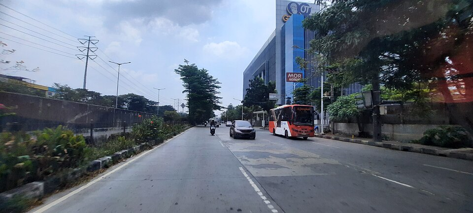
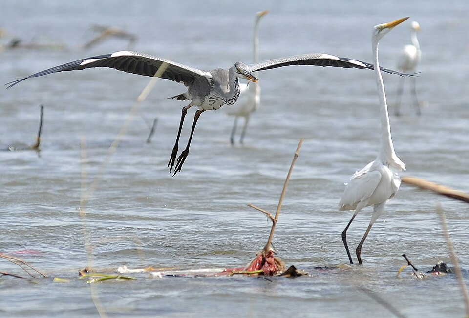
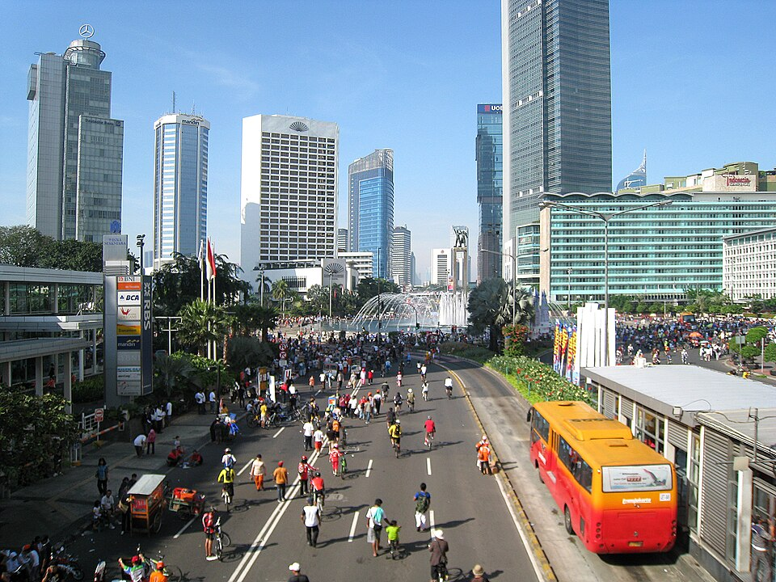
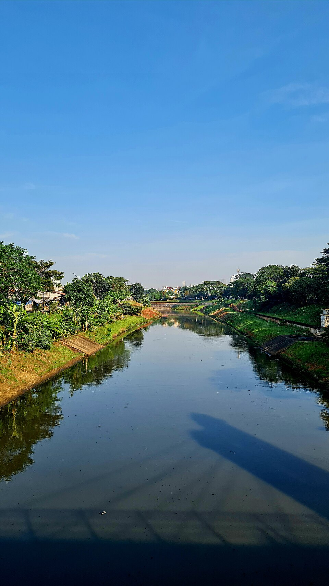

Sampaikan laporan, pantau realisasi anggaran, dan kawal kebijakan publik secara langsung berbasis data terbuka dan respon terukur di wilayah aglomerasi DKI Jakarta.
Setiap aduan dikonversi menjadi mandat resmi dinas dengan sistem tiket yang dapat ditelusuri.
Sistem memvalidasi NIK pelapor via Dukcapil, memindai geotag gambar, serta menggabungkan laporan serupa dalam radius 50 meter.
Penerbitan Surat Perintah Kerja (SPK) digital ke dinas teknis (Bina Marga, SDA, Dishub) dengan batas waktu SLA yang dapat dipantau.
Pekerjaan dinyatakan selesai setelah warga mengunggah foto geotag before & after terverifikasi untuk penerimaan BAP.
Pantau aduan warga dan tindak lanjut instansi secara terbuka dan terukur.

Dalam Proses InfrastrukturLubang berdiameter 50cm dan kedalaman 15cm sudah ada selama 3 bulan. Sudah menyebabkan 2 kecelakaan minor...

Terselesaikan LingkunganTimbunan sampah sepanjang 200 meter telah dibersihkan oleh Dinas Lingkungan Hidup bersama komunitas peduli lingkungan...

Pelayanan PublikPengurusan e-KTP yang seharusnya selesai dalam 14 hari kerja sudah memasuki minggu ke-6 tanpa kejelasan status...

Urgent LingkunganKondisi saluran dan bantaran perlu dipantau untuk menjaga kapasitas aliran air menjelang musim hujan...
Pantau hotspot laporan dan telemetri penyelesaian di seluruh wilayah DKI Jakarta.
892 Laporan
Terselesaikan: 78%
Identitas NIK Anda terjamin melalui enkripsi end-to-end bersertifikasi BSSN. Laporan Anda langsung menerbitkan tiket audit publik.
Transparansi layanan publik yang terhubung dari laporan hingga tindak lanjut.
Meja kerja terpadu staf operasional dinas untuk menerbitkan SPK, memvalidasi foto geotag, serta mengesahkan BAP digital.
Kecerdasan analitik untuk pimpinan daerah: indeks kepuasan warga, metrik performa tiap camat, dan prediksi hotspot bencana berbasis data.
Korelasikan setiap penyelesaian aduan dengan titik proyek APBD dan efisiensi pengerjaan di lapangan untuk mendukung pengawasan publik.
Membantu masyarakat dan pembuat kebijakan mengambil keputusan berdasarkan data yang akurat
Temukan jawaban untuk pertanyaan yang sering diajukan
Anda dapat membuat laporan dengan mengisi formulir di halaman ini atau klik tombol "Buat Laporan" di navigasi. Isi detail masalah, lampirkan foto/video sebagai bukti, dan tentukan lokasi kejadian. Laporan Anda akan langsung masuk ke sistem verifikasi kami.
Ya, keamanan identitas pelapor adalah prioritas kami. Anda dapat memilih untuk melaporkan secara anonim. Data pribadi Anda dienkripsi dan hanya dapat diakses oleh tim verifikator yang berwenang. Kami mematuhi UU Perlindungan Data Pribadi.
Setelah laporan terverifikasi, rata-rata waktu respon pertama adalah 2 jam kerja. Penyelesaian laporan bergantung pada kompleksitas masalah: masalah ringan 3-7 hari, sedang 7-14 hari, dan berat 14-30 hari. Anda dapat memantau progres secara real-time.
Tim verifikator independen kami akan melakukan cross-check data, memverifikasi lokasi melalui GPS, dan jika diperlukan melakukan survei lapangan. Laporan yang lolos verifikasi akan diteruskan ke dinas terkait untuk ditindaklanjuti.
Ya, data agregat dan insight dari laporan tersedia di halaman Data & Insight. Data ini dapat digunakan oleh masyarakat, peneliti, dan pembuat kebijakan untuk analisis dan pengambilan keputusan. Data individu pelapor tetap terlindungi.
Setelah mengirim laporan, Anda akan menerima nomor tracking unik. Gunakan nomor ini untuk memantau status di halaman Laporan. Anda juga akan mendapat notifikasi via email/WhatsApp setiap ada update progres.
Bergabunglah dengan ribuan warga yang sudah aktif berpartisipasi dalam pengawasan publik. Suaramu penting!